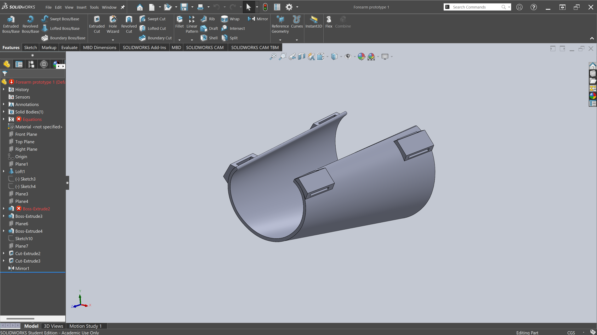
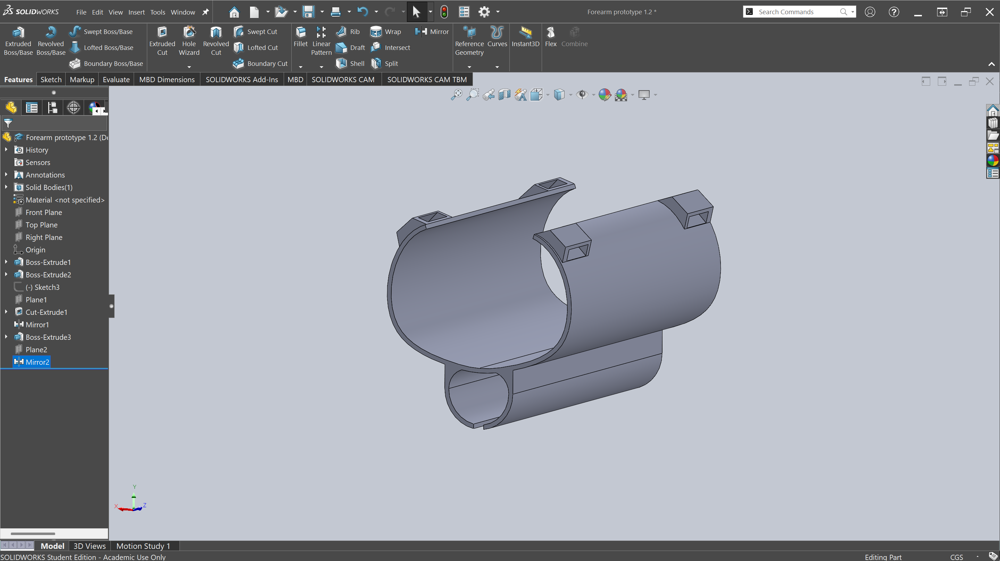
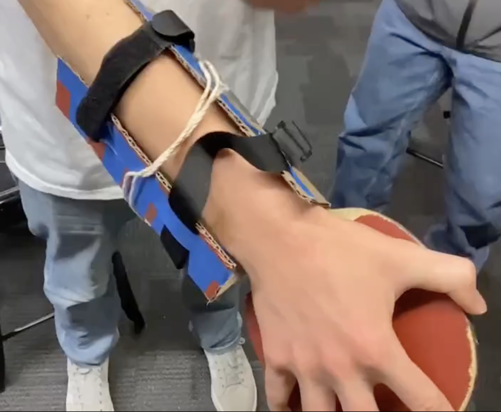

In February 2026, Team BEARGE presented our initial forearm gauntlet prototype to Sarah Brockberg. Her feedback directly shaped our next phase of design.



Our first prototype is a forearm gauntlet — a rigid sleeve that mounts to the forearm and holds a racket attachment, removing the need for the student to grip the implement at all. The core design premise is that the racket is secured to the limb rather than held in the hand, redistributing the mechanical demands of a striking motion from the fingers and wrist to the forearm and arm as a whole.
The gauntlet is modeled after AFO (Ankle-Foot Orthosis) bracing principles: a form-fitting shell that distributes load across the limb rather than concentrating it at a single point of contact. This approach was selected because it eliminates the three compounding motor demands — grasp, wrist stabilization, and directional control — that collectively prevent many of Sarah's students from participating in racket-based activities.
Sarah responded positively to the foundational concept of a forearm-mounted attachment. From her perspective as an APE teacher, the single most significant barrier for her students is the grip requirement — many of her students have limited or no active hand function, meaning any solution that depends on grasping an implement is immediately inaccessible to a substantial portion of her population.
By moving the point of attachment from the hand to the forearm, the gauntlet concept eliminates that barrier entirely. Sarah noted that this approach could accommodate students across a wide spectrum of hand mobility — from those with severely reduced grip strength to those with no voluntary hand movement at all — making it broadly applicable rather than limited to a narrow subset of her students. She confirmed the forearm-mounted direction was worth developing further.
When Egan demonstrated the prototype by mounting it on his own forearm, Sarah immediately identified a significant ergonomic problem: the geometry of the v1 design forced the user's hand into a dorsiflexed position — that is, the wrist was bent backward (toward the top of the forearm), with the palm facing downward and the hand extended away from the body's midline.
Sarah explained that dorsiflexion is not a viable resting position for the majority of her students. Many of them have hypertonia, spasticity, or limited voluntary wrist control, meaning they are physically unable to achieve or sustain that wrist angle. For those who could approximate it, maintaining dorsiflexion over the duration of an activity would cause discomfort and potentially strain or injury. Sarah was direct: this wrist orientation disqualified the v1 design from use with her population as built, and the geometry needed to be fundamentally reconsidered before the prototype could be clinically appropriate.
Neutral hand position: Sarah's primary recommendation was to redesign the gauntlet geometry around a neutral wrist position — the posture the hand naturally assumes when the arm hangs relaxed at the side, with no active extension or flexion of the wrist. This position is clinically comfortable, does not require active muscle engagement to maintain, and is achievable by a far broader range of students than dorsiflexion.
Closed-hand variant: Sarah also flagged that a subset of her students cannot open their hands at all due to spasticity or fixed contracture. Any design that assumes the hand can be placed flat against a surface or spread open would exclude this group. She specifically requested that the team develop a variant that accommodates a closed-fist or relaxed-curl hand posture.
Open-hand variant: For students who can open their hands but cannot actively grip or squeeze, Sarah expressed interest in a palm-spread interface — a design that secures the implement against the open palm without requiring the student to close their fingers around it.
On April 7, 2026, the team conducted field testing on the indoor volleyball courts at the CU Boulder Recreation Center, presenting the MVP to Sarah Brockberg as a first functional iteration designed to validate the core mechanical interface.
The MVP introduced two parallel hand attachment strategies: a fabric mitten (closed-hand version) and a PLA plate (open-hand version). Both connected to the racket handle via a box-and-slot system cinched with industrial-grade Velcro. The team conducted 20 minutes of active badminton play — including serves, volleys, and overhead strikes — to evaluate structural integrity and impact on the user during repetitive striking motions.
| Metric | Target | Actual | Status |
|---|---|---|---|
| Total Weight | < 1.0 lb | ~0.25 lbs | Validated |
| Production Cost | < $5.00 | ~$3.15 | Validated |
| Grip Dependency | 0% Active Grip | 0% Active Grip | Validated |
| Assembly Efficiency | Low Effort | Low (~5 min/unit) | Validated |
The box and slot system was a structural success. Once secured, the racket remained a stable extension of the arm — no rotational slippage occurred during high-velocity impacts across 20 minutes of active play.
Weight and cost targets were both met, and the design achieved zero active grip dependency across both attachment variants.
The internal slots required dense 3D-printing supports that were difficult to remove, creating a significant labor bottleneck — over 30 minutes of post-processing per unit — that would make classroom-scale production impractical.
The rigid PLA geometry caused pinching at the wrist and elbow joints, and the resulting splinting effect restricted wrist movement, making aiming and timing strikes more difficult than anticipated.
Sarah Brockberg confirmed the value of the dual-track approach — Mitten vs. Plate — noting that versatility across hand types is essential for inclusive education.
Her primary critiques centered on long-term wearability: joint pinching and the total lack of wrist articulation were identified as the most significant barriers to student adoption. While the design addressed the grip strength pain point, testing surfaced a second critical pain point — comfort.